Последователни стъпки¶
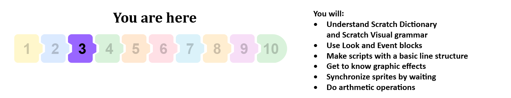
В предишния урок научихме за командите за движение, а сега ще видим как можем да използваме командите от групата „Външност и събития“. Ще покажем как присвояваме определено поведение на нашия спрайт, като свързваме блокове за формиране на сценарии. Проектите в този урок се състоят от сценарии съставени от поредица последователни стъпки. Можем да кажем, че този тип сценарии имат проста линейна структура.
Терминологията и визуалната граматика на езика на скрач
Спрайтовете могат да изпълняват повече от 100 команди. Блоковете, които съответстват на команди, представляват речника на езика на Скрач, а правилата, чрез които те са свързани, съответстват на граматиката му. Блоковете се съхраняват в палитрата на блоковете и са разделени на 10 различни цвята :
|
|
|
|
|
 Движение,
Движение, Звук,
Звук, Сетива,
Сетива, Моите блокове
Моите блокове Разширения.
Разширения.Блоковете са групирани заедно, за да улеснят потребителите при създаването на сценарии. Независимо колко сложно е поведението на даден спрайт, сценария, който го описва, е съставен от набор от прости операции, съдържащи се в тези 10 вида. Ако знаете какъв тип дейност трябва да извършва спрайтът, можете лесно да изберете правилната група и да вземете от нея съответния блок.
Има независими и функционални блокове.
Независимите блокове съответстват на езикови команди, тоест съответстват на стъпките на алгоритъма. Някои от тях имат полета за въвеждане, където потребителят може да зададе конкретна стойност.
Функционалните блокове връщат стойности. Те не могат да стоят независимо в сценарий, те трябва да бъдат вмъкнати в блокови полета, които получават стойности и уточняват техните действия.
Блоковете са оформени така, че да могат да се свързват само онези, които формират правилна езикова конструкция, тоест Скрач има визуална граматика, която не позволява грешки в синтаксиса.

Независими/ Самостоятелни блокове
В текста ще визираме блокове, които съответстват на стъпките за обработка като стекови блокове. Всеки отговаря на една дейност, тоест той отговаря на въпроса КАКВО трябва да се направи. Например блокът  командва спрайта да премести определен брой стъпки в моментната му посока. Формата на този блок прилича на тухла Лего, а целият сценарий изглежда като куп тухли.
командва спрайта да премести определен брой стъпки в моментната му посока. Формата на този блок прилича на тухла Лего, а целият сценарий изглежда като куп тухли.
Посоченият брой стъпки се въвежда в бялото кръгче - поле за въвеждане на блока.
В блока  едното входно поле има форма, подобна на заоблен правоъгълник, а другото има форма на кръг. Полетата за въвеждане на заоблен правоъгълник могат да получават както текстови, така и числови стойности, докато окръжните могат да получават само стойности на числата.
едното входно поле има форма, подобна на заоблен правоъгълник, а другото има форма на кръг. Полетата за въвеждане на заоблен правоъгълник могат да получават както текстови, така и числови стойности, докато окръжните могат да получават само стойности на числата.
Блокът  има три полета за въвеждане.
има три полета за въвеждане.
Някои от блоковете имат шестоъгълни полета за въвеждане, например контролния блок  . Тези полета за въвеждане могат да получават само логически стойности (вярно или невярно).
. Тези полета за въвеждане могат да получават само логически стойности (вярно или невярно).
В групата с контроли на блокове има С-образни блокове. Слотът вътре в C-блока е специфичен тип поле за въвеждане, където можете да вмъкнете целия сценарий. Блокът за повторение има две полета за въвеждане: едно за числото и едно за сценария.
Има също контролен блок, който има E-образна форма и три полета за въвеждане, едно за условието (логическа стойност) и две за сценариите. Първото поле за въвеждане на сценариите дава командата какво трябва да се направи, ако условието е изпълнено, а другото какво трябва да се направи, ако не е изпълнено.
Блоковете шапка съответстват на първоначалната крачка на алгоритъм. Те отговарят на въпроса КОГА ще се изпълни сценарият. Тези блокове имат закръглени върхове, те се поставят в горната част на стека и са свързани с блока отдолу чрез бутон в долната част. Блоковете Шапка определят какво трябва да се направи, за да може стекът под него да започне да работи. Можете например да кликнете върху зеления флаг или да натиснете определен клавиш на клавиатурата.
Cap Блоковете съответстват на крайната стъпка на алгоритъма. Те са с отвор на върха, но нямат надупчинка отдолу. Тъй като в Скрач може да има повече от един сценарий, свързан с един обект, блокът cap може да спре изпълнението на всички активирани сценарии.
Функционални блокове
Функционалните блокове съдържат информация за други блокове. Те често се наричат репортери, защото съобщават текущата стойност на променлива. В предишната глава представихме репортерските блокове, които държат текущите координати и посоката на спрайта. Някои репортерски блокове също имат кръгли и заоблени правоъгълни полета за въвеждане  и
и  .
.
Логическите блокове съдържат логически стойности (вярно или невярно). Те имат шестоъгълна форма и могат да се поставят само във входните полета на съответната форма (шестоъгълна или правоъгълна). Както например блока  . В Скрач сложните логически условия могат лесно да бъдат изградени чрез поставяне на логически блокове във входните полета на други такива блокове.
. В Скрач сложните логически условия могат лесно да бъдат изградени чрез поставяне на логически блокове във входните полета на други такива блокове.
Функции на блоковете Външност и Събития
Блоковете за движение, които разработихме в предишния урок, могат да се използват само за спрайтове. За разлика от тях, можете да използвате блоковете от групата на Външност, за да управлявате външния вид на спрайта и фона, т.е. външния вид на сцената. Това обаче не се отнася за всички блокове от тази група. Сред тях има такива, които се отнасят само за спрайтове, и тези, които се отнасят само за сцената. Блоковете от групата Събития инициират изпълнението на сценариите.
В предишните уроци вече научаваме за ефектите на някои от блоковете „Външност и събития“, например, кажете и натиснете клавиш. В този урок ще представим по-подробно блоковете, които позволяват лесна анимация с прилагането на вградени графични ефекти и ще разширим речника на скрач, като използваме нови команди.
 Разгледайте следните примери¶
Разгледайте следните примери¶
Можем да забавляваме приятелите си, като разказваме вицове, а също и като им показваме математически трикове. Следващият проект илюстрира един от тях. Той има само един сценарий с проста линейна структура.
Пример 1 - Проект „Математически триꓶ
Стъпка 1: Помислете за едно трицифрено число, където всички цифри са еднакви, напр. 111, 222.
Стъпка 2: Добавете тези цифри заедно.
Стъпка 3: Разделете трицифрената цифрова форма Стъпка 1 на сумата, получена в Стъпка 2.
Стъпка 4: Резултатът е 37.
Сценарият на този проект е доста прост. Спрайтът използва блока за да даде на потребителя първите три заявки, а блокът да съобщи резултата.
Ще използваме спрайт на момиче, наречено Ейвъри от спрайт библиотеката, този спрайт има два костюма (кликнете върху раздела Костюми, за да ги видите) и след всяка заявка ще дадем команда за промяна на костюма, като използваме блока  .
.
Тъй като потребителят се нуждае от време, за да изчисли какво се изисква от него / нея, в първите два блока ще поставим спрайтът да каже дадения текст за 3 секунди, а в третия ще дадем 5 секунди. Блокът оставя последния текст на екрана, докато не спрем изпълнението на програмата, като щракнем върху знака за спиране - червения осмоъгълник над горния десен ъгъл на сцената.
Сценарият на този проект е представен на следната фигура.
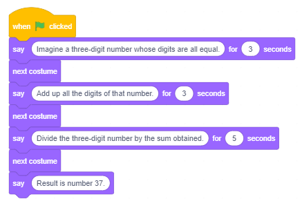{kind=link}
Пример 2 - Проект „Разговор“¶
Този проект представлява надграждане на проекта „Математик“. В него момичето Ейвъри и момчето Девин представят един и същи математически трик чрез разговор, в който Девин мисли за число 222 и извършва необходимите изчисления, а накрая пита „Как разбра?“. Поведението на двата спрайта се определя от сценариите, които имат проста линейна структура. За да изглежда така, че наистина говорят, сценария на момичето трябва да включва блокове за чакане, докато момчето мисли, а това на момчето трябва да включва блокове за чакане, докато момичетата задават въпросите.
Сценарият на този проект е представен на следната фигура.
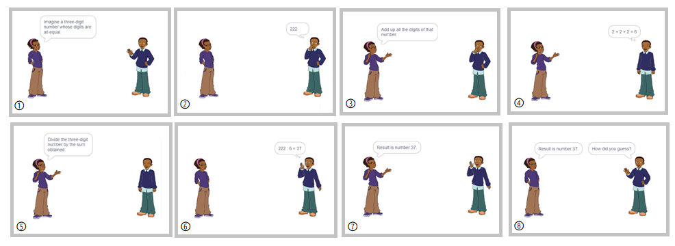{kind=link}
Създаване на проекта
 Отворете проекта Математик.
Отворете проекта Математик.
 Запазете този проект под новото име Разговор.
Запазете този проект под новото име Разговор.
Съвет. Когато създавате нова версия на съществуващ проект, запишете го под ново име в самото начало. По този начин няма да загубите старата версия.
 От спрайт библиотеката изберете спрайт на момче на име Девин.
От спрайт библиотеката изберете спрайт на момче на име Девин.
 Поставете спрайта на момчето до десния ръб на сцената и променете посоката му в прозореца с информация за спрайт до -90, така че той да е изправен пред момичето спрайт.
Поставете спрайта на момчето до десния ръб на сцената и променете посоката му в прозореца с информация за спрайт до -90, така че той да е изправен пред момичето спрайт.
 Добавете следните сценариите към спрайтовете.
Добавете следните сценариите към спрайтовете.

В проекта “Математик” момичето казва 4 изречения и 3 пъти сменя костюма си (има 2 костюма). Това означава, че ако стартираме проекта два последователни пъти, момичето няма да се появи с едно и също облекло в началото на двете серии. Тъй като искаме момичето да се появи в началото, носещо един и същ костюм и двата пъти, добавяме съответната команда в горната част на сценария.
Съвети. Поставете команди в началото на проекта, които определят спрайтите (посочете къде и в кой костюм трябва да се появяват), особено ако спратите се движат по време на изпълнение на проекта.
Ние координирахме поведението на спрайтите, като вмъкнахме команди за изчакване в техните сценарии.

 Запазете променената версия на проекта.
Запазете променената версия на проекта.
Ако искате да знаете отговора на въпроса на момчето „Как разбра?“, Кликнете върху иконата Show Instruction.
Инструкции:
Момичето го помолило да измисли трицифрено число със същите цифри. Нека наречем тази повтаряща се цифра x. В този случай неизвестното число може да бъде представено като 111х, а сумата от неговите цифри като 3х. Резултатът от операцията по разделяне на числото на сумата от неговите цифри е 111/3 = 37, независимо от първоначалното число.
Групата * Оператори * съдържа блокове, които позволяват да се извършват аритметични операции. Например, блокът позволява събиране. Ако поставите числа във полетата за въвеждане на този блок, той ще изчисли тяхната сума. Операторите не могат да стоят самостоятелно в сценария, те трябва да бъдат вмъкнати в полето за въвеждане на независим блок. Например, ако ги поставите в полето за въвеждане на блоковете say или think пресметната стойност ще бъде показана.
Example 3 - Project “Calculation”¶
Следващият проект също е надграждане на предишния. В него вместо фиксираното число 222, момчето избира друго трицифрено число с трите еднакви цифри и го използва за извършване на необходимите операции. Това могат да бъдат програми, благодарение на възможността за генериране на произволно число от дадения интервал.
Генериране на случайни числа
Сред блоковете на Операторите е командата  . Генерирането на произволно число означава произволен избор на число от интервал. Най-ниското и най-голямото число на този интервал се вмъкват във входните полета на този репортерски блок. Така че, ако тези числа бяха 1 и 10, ще бъде избрано всяко число от интервала [1,10] и, например, ако беше -100 и 100, тогава ще се генерира число от интервала [-100,100].
. Генерирането на произволно число означава произволен избор на число от интервал. Най-ниското и най-голямото число на този интервал се вмъкват във входните полета на този репортерски блок. Така че, ако тези числа бяха 1 и 10, ще бъде избрано всяко число от интервала [1,10] и, например, ако беше -100 и 100, тогава ще се генерира число от интервала [-100,100].
В нашия пример в първото поле трябва да въведете номер 1, а във второто число 9.
В този проект използвахме променливи, които ще бъдат въведени в осмия урок. Ето защо той е маркиран като труден. Можете да го пропуснете и да се върнете към него по-късно.
Ако от друга страна харесвате предизвикателство, нека предварително да кажем нещо по тази тема. Когато казваме променлива, имаме предвид зоната на компютърната памет, където програмата съхранява текущите стойности на данните, с които работи. Тази зона се нарича Име на променливата и стойността на променливата е това, което се съхранява в нея.
Създаване на Проект

Отворете проекта за Разговор и го запишете под ново име Калкулация.
Създайте променливата x, която съответства на цифрите на трицифрено число и задайте произволно число от интервала [1,9] като начална стойност.
Създайте променливото число и като първоначална стойност задайте стойността на израза 111*x.
В първия блок мисля Мислене на сценария на момчето вмъкнете репортерния блок на променливото число вместо числото 222.


Създайте променливата sum и като първоначална стойност задайте стойността на израза x+x+x. Тъй като блокът за добавяне има само две полета за въвеждане, ние ще добавим един блок за добавяне във полето за въвеждане на друг допълнителен блок. (Разбира се, бихме могли да направим същото, използвайки един блок за умножение, защото х+х+х=3*х).

Във втория блок think на сценария на момчето вмъкнете репортера на сумата на променливата вместо текста 2+2+2.
 Създайте променливия резултат и като първоначална стойност задайте стойността на израза число/сума.
Създайте променливия резултат и като първоначална стойност задайте стойността на израза число/сума.
 В третия блок на сценария на момчето вмъкнете репортера на променливия резултат вместо числото 37.
В третия блок на сценария на момчето вмъкнете репортера на променливия резултат вместо числото 37.
 Стартирайте проекта няколко пъти, за да проверите дали той генерира различни трицифрени числа.
Стартирайте проекта няколко пъти, за да проверите дали той генерира различни трицифрени числа.
 Запазете променената версия на проекта.
Запазете променената версия на проекта.
Проект „Ефекти на Спрайта“¶
Следващият проект показва как командата  от групата Външност може да повлияе на външния вид на спрайт. Той също така показва блока на събитията, когато този спрайт е кликнат, може да започне изпълнението на сценария.
от групата Външност може да повлияе на външния вид на спрайт. Той също така показва блока на събитията, когато този спрайт е кликнат, може да започне изпълнението на сценария.
Сценарий на проекта
На сцената има 7 копия на един и същ спрайт. Кликването върху един от тях променя спрайта с помощта на един от седемте графични ефекта. Това е активирано от командата . Спрайтът също казва кой ефект е бил използван.
Създаване на проекта
Стартирайте нов проект..
Изтрийте спрайта за котки и изберете спрайт Певец1 от библиотеката с спрайтове.
Добавете следния сценарий към спрайта.

Кликнете с десния бутон върху спрайта в списъка с спрайтове, за да отворите менюто за бърз достъп, и изберете опцията дублиране. Певец2 спрайт ще се появи в списъка със спрайтове и ще има същия сценарии като спрайта, използван за създаването му.
Променете ефекта в блока на fisheye, и в блока променете текста на fisheye.
Направете същото още 5 пъти, но всеки път изберете друг ефект от падащото меню и променете съобщението, което спрайтът казва, когато кликнете върху него.
Подредете равномерно спрайтите на сцената и тествайте дали проектът прави това, което е било предвидено, като кликнете върху всеки спрайт.
Всеки път, когато кликнете върху някой от спрайтовете, ще се появи подходящият ефект.
Следователно към сцената трябва да се добави сценарии, който при кликване върху зеления флаг ще отмени промените, като използва блока  .
.
Следващата фигура показва появата на спрайтовете след едно или повече приложения със съответния ефект.

Пример 5 - Проект „Сценични ефект蓶
За разлика от блоковете Движение, блоковете Външност могат да се прилагат и на сцената. Всички сценарии в този проект ще бъдат добавени на сцената. Целта на този проект е да покаже как командата влияе върху външния вид на сцената и да ви даде идеи как можете да го използвате в бъдещите си проекти. За да върнем всичко в нормално състояние, ще добавим блока за изчистване на всички графични ефекти към блока на събитията, когато се кликнете зелено знаме.
Сценарий на проекта
Котката е в средата на пустинята. Потребителят може да промени вида на фона, като натисне клавишите с цифри от 1 до 3 на него. Всяко от тези събития съответства на един от графичните ефекти на фона. Следващата фигура показва как изглежда сцената в началото (0) и след натискане на клавишите няколко пъти: 1 - ефект цвят, 2 - ефект рибешко око, 3 - ефект вихър и 4 - ефект пикселат.

 Разбра ли?¶
Разбра ли?¶
Въпрос 1¶
Q-66: Кои от блоковете принадлежат към групата на командите Външност? (Изберете всички верни отговори)

Въпрос 2¶
Q-67: Кои от блоковете принадлежат към групата команди на Събития? (Изберете всички верни отговори)
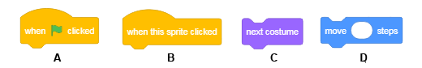{kind=link}
Въпрос 3¶
Q-68: Кой от блоковете принадлежи към група от команди Контрол? (Изберете всички верни отговори)
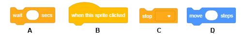{kind=link}
Въпрос 4¶
- yes
- no
- Вярно.
Q-69: Може ли един сценарий да има няколко блока шапки?
Въпрос 5¶
- блокове репортер
- стек блокове
- Вярно.
- блокове шапки
- cap блокове
Q-70: Как да наречем блоковете, които имат изрез в горната част и неравности в долната част?
Въпрос 6¶
- блокове репортер
- Вярно.
- стек блокове
- блокове шапки
- C-блокове
Q-71: Какво наричаме блокове, които държат стойностите и не могат да стоят независимо в сценарий, но те трябва да бъдат вмъкнати в полетата за въвеждане на други блокове?
Въпрос 7¶
-
Q-72: Като плъзнете правоъгълниците, съберете блоковете с тяхната роля в Скрач.
Try again
- hat
- define WHEN the script will run
- reporters
- hold values
- C-blocks
- receive the script as input
- stack blocks
- define WHAT should be done
Въпрос 8¶
- да
- не
- Вярно.
Q-73: Дали  и 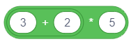 имат една и съща стойност?
и 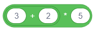 имат една и съща стойност?
Въпрос 9¶
- никой
- Грешно. Стойността на вторият е 10/(-1)=-10
- първият
- Грешно. Стойността на вторият е 5-3=2
- вторият
- Вярно.
- и двата
- Грешно. Стойността на вторият е 2.
Q-74: Кой от изразите  и
и  има негативна стойност?
има негативна стойност?
Въпрос 10¶
Каква е стойността на израза  ?
?
Въпрос 11¶
- 45
- Грешно. 5+(2*(7-4)) = 5+2*3 = 5+6 = 11
- 11
- Вярно.
- 15
- Грешно. 5+(2*(7-4)) = 5+2*3 = 5+6 = 11
Q-75: Каква е стойността на 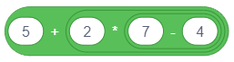?
Въпрос 12¶
- 3
- Грешно. ((2+1)*(9-5))/2 = 3*4/2 = 6
- 11
- Грешно. ((2+1)*(9-5))/2 = 3*4/2 = 6
- 6
- Вярно.
Q-76: Каква е стойността на израза  ?
?
 Опитай!¶
Опитай!¶
Упражнение 1 - Уголемяване¶
Създайте проект, в който спрайтът ще става все по-голям и по-малък на сцената. Клавишът със стрелка нагоре трябва да го направи по-голям, а стрелката надолу да го направи по-малък. Направете го така, че при кликване върху зеления флаг спрайтът да се върне към нормалния си размер.
Инструкции:
Следния скрипт трябва да бъде добавен към спрайта: 
Упражнение 2 - Завъртане¶
Към спрайт за котки добавете още два спрайта от библиотеката на спрайтите: момичето Ейвъри и момчето Девин. Поставете спрайта вляво, а момчето спрайт надясноот страна на котката. Създайте проект, който ще позволи на котешкия спрайт да завие наляво по посока на момичето, а надясно по посока на момчето. Завъртането наляво трябва да се контролира с левия клавиш със стрелка, а надясно да се върти с десния клавиш със стрелка. Уверете се, че котката не е обърната с главата надолу, когато завие наляво.
Инструкции:
Следния скрипт трябва да бъде добавен към спрайта котка: 
Упражнение 3 - Промяна на цвета на фона¶
Създайте проект, който позволява цветът на сцената да се променя всеки път, когато кликнете върху него. Използвайте цветния ефект и се уверете, че кликването върху зеления флаг премахва графичните ефекти.
Instruction:
Следните скриптове трябва да бъдат добавени към сцената: 
Упражнение 4 - Кодиране на аритметични изрази със скоби (1)¶
Създайте аритметичен израз в Скрач, който съответства на следния математически израз: (5*(5+4))-(2*(2+3)). Чрез поставяне на съответния репортер блок в полето за въвеждане на блока казвам проверете дали получавате правилната стойност: (5*(5+4))-(2*(2+3))=5*9-2*5=45-10=35
Answer:

Упражнение 5 - Кодиране на аритметични изрази със (2)¶
Създайте аритметичен израз в Скрач, който съответства на следния математически израз: (8/(4-2))*(8-(6/2)) Чрез поставяне на съответния репортер блок във полето за въвеждане на блока say тествайте дали получавате правилната стойност: (8/(4-2))*(8-(6/2)) = 8/2*(8-3) = 4*5 = 20.
Answer:
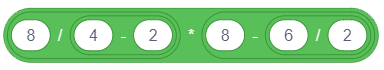
 Отстранете грешката!¶
Отстранете грешката!¶
Грешка 1¶
- Въпрос
Правилно ли е синхронизиран следният разговор?

Answer:
Таймингът не е коректен. Командите wait и say трябва да има същото количество секунди в полетата за въвеждане, за да бъде синхронизиран по подходящ начин.
Грешка 2¶
- Въпрос
Ученикът обича да прави всичко според правилата и затова иска да добави командата за стоп към всяка програма. Така решава да добави блока
 към края на сценария в проекта „Математик“. Текстът на последния блок обаче изобщо не се вижда. Как ученикът може да коригира тази грешка и все пак да има командата за спиране в края?
към края на сценария в проекта „Математик“. Текстът на последния блок обаче изобщо не се вижда. Как ученикът може да коригира тази грешка и все пак да има командата за спиране в края?

Answer:
Командата кажи Резултатът е 37 моментално се изпълнява и командата` спри всичко` се стартира веднага след нея, поради което на практика не можем да видим ефекта от блока` казвам ‘’. Следователно този блок трябва да бъде заменен с блока ` say__for__seconds ‘’, където текстът трябва например да бъде видим за 5 секунди.
Грешка 3¶
- Въпрос
Ученикът иска спрайтът да се върти, когато натисне клавиша за интервал. Но това не се случва. Къде е грешката?

Answer:
Спрайтът се върти, но това се случва твърде бързо, със скоростта, с която компютърът изпълнява команди, така че човешкото око не е в състояние да регистрира движението. Ако искате да видите кога се върти спрайта, трябва да поставите команда за изчакване между командите `` завой надясно ‘’. Така, ще можем да видим спрайта да завива.
 Обобщение¶
Обобщение¶
В този урок се запознахме с групите и формите на блоковете от блоковата палитра, които се използват за даване на команди на език за програмиране в скрач. Визуалният речник съдържа повече от 100 блока, разделени в 10 групи. Визуалната граматика на скрач се осъществява чрез специфичната форма на блоковете, която не им позволява да се свързват, ако функциите им не са съвместими. Независимите блокове са свързани по такъв начин, че формират сценарии, които определят поведението на съответните обекти, а функционалните блокове задават необходимите стойности.
Scratch проекти: 3Studio
Нови концпеции: събития, действия, аритметични оператори, случайни числа, линейна структура на сценария.
Scratch команди:  -
-  ,
,  ;
;  -
-  , ;
, ;
 -
-  , , , , 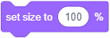,
, , , , 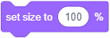,  ;
;
 - ,
- ,  ,
,  ,
,  , ;
, ;  -
- 
 .
.
Забележка. Блоковете маркирани съз знака ще бъдат дикутирани в следващите уроци.
 Създайте проекти¶
Създайте проекти¶
Проект 1 - „Гени银
Създайте този проект въз основа на примера Математик.
Започнете нов проект, който ще наречете Гений. Изберете основния спрайт от библиотеката с спрайт и фона от библиотеката на фона. Спрайтът трябва да даде следните задачи.
„Помислете за всяко трицифрено число.“
„Подредете цифрите от най-високото до най-ниското - това ще бъде първото число.“
„Подредете цифрите от най-ниското до най-високото - това ще бъде второто число.“
„Извадете второто число от първото число.“
„Запомнете резултата и след това прехвърлете цифрите му.“
„Това ново число добавя към резултата, който сте запомнили преди.
„Броят, който имаш е 1089.“
Проект 2 - „Шоколадова торта“¶
Започнете нов проект, който ще наречете шоколадова торта. Това трябва да е анимация, при който пекарят обяснява рецепта (алгоритъм) за приготвяне на шоколадова торта.
За тази анимация ще ви трябват следните спрайтове: хлебар, яйца, брашно, захар, шоколад, купа, миксер, фурна, торти. Намерете подходящите изображения на вашия компютър или в Интернет и ги персонализирайте, за да отговарят на вашия проект (изчистете фона, направете ги по-големи или по-малки …).
Осигурете синхронизацията на сценариите, като добавите командата за чакане към всички обекти и зададете подходящото време. Единственият спрайт, който трябва да бъде на сцената през цялото време, е спрайтът за хлебар. Той чете рецептата (алгоритъма) и определя кога ще се появят или изчезнат други спрайтове.
Хлебарят е сам на сцената. Той казва: „Ето алгоритъма за приготвяне на шоколадова торта!“ (2 секунди)
Хлебарят казва следното: “Вземете яйцата, брашното, захарта и шоколада.” В този момент на сцената трябва да се появят яйца, брашно, захар и шоколад. Тази сцена трябва да продължи 2 секунди.
Хлебарят казва следното: „Сложете всичко в купа и комбинирайте с миксера.“ В този момент яйцата, брашното, захарта и шоколадът изчезват от сцената и се появяват купата и миксерът. Тази сцена трябва да продължи 2 секунди.
Хлебарят казва следното: „Сложете купата в загрятата фурна.“ В този момент купата и миксера изчезват от сцената и фурната се появява. Тази сцена трябва да продължи 2 секунди.
Хлебарят казва следното: “Печете тортата 30 минути.” Нищо не се променя на сцената. Тази сцена трябва да продължи 2 секунди.
Хлебарят казва следното: “Сервирайте тортата.” В този момент фурната изчезва от сцената и се появява тортата. Тази сцена трябва да продължи 2 секунди.